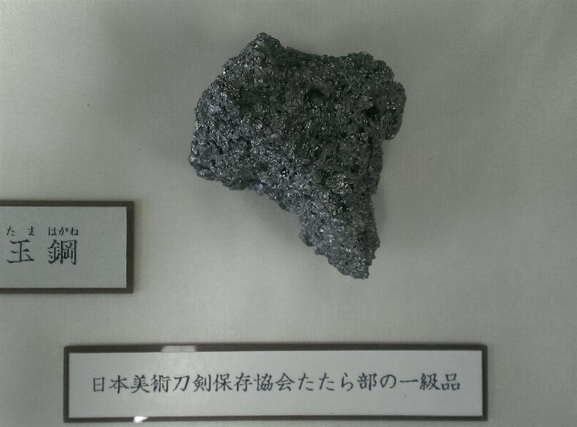

What is it?
This is a lost and revived craft. Tamahagane means “precious steel”. It was traditionally used to make Japanese swords, which are famous for being sharp and strong.
It is made with the tatara process. Iron sand and charcoal are added to a hot clay furnace for three days and three nights. (Google Arts & Culture, n.d.)
History
This steel was the traditional material for sword blades. The tatara process disappeared after World War Two. (Google Arts & Culture, n.d.)
Later, a new furnace called Nittoho Tatara was built in Okuizumo, Shimane. It made the area a centre for this steel again. (Google Arts & Culture, n.d.)
Why is it endangered?
The knowledge was nearly lost when the furnaces stopped. Crafts like this depend on special natural materials, skilled people and time, and those are hard to replace. (Google Arts & Culture, n.d.)
Its return shows that a craft can come back if people support it.
How you can help
- Visit museums that explain how Japanese swords and steel are made.
- Learn about the materials and tools behind a craft, as well as the finished object.
- Tell others that lost crafts can return.
Quick facts
- Made in Okuizumo, Shimane
- Furnace runs for three days and three nights
- Disappeared after World War Two, later revived
Sources
- Rediscovering the Lost Crafts of Japan, Google Arts & Culture, n.d.